HISTORIEN OM MEDOVA
Medova te er helt tilbage fra slut 1800-tallet. Den blev dog først særligt velkendt blandt den danske befolkning, efter 2. verdenskrig.
Medova te blev kendt for sloganet ''ER DE UDKØRT EFTER KL. 3? MEDOVA TE TA'R TRÆTHEDEN'' da et enkelt brev består af hele 50 gram koffein, hvilket svarer til en halv kop kaffe.
Medova te er 100% sort te, dyrket af topskud fra Kenya, Ceylon, Indonesien og Indien.
